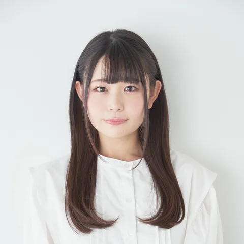
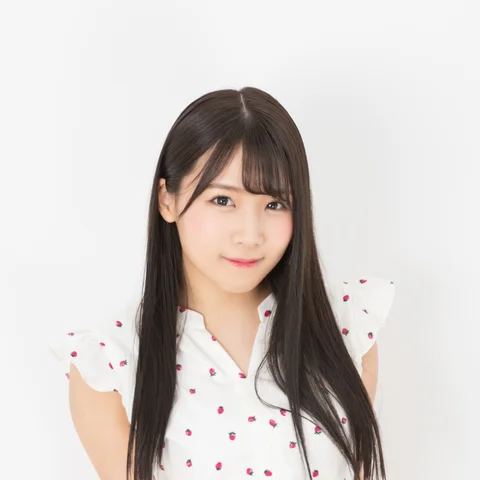
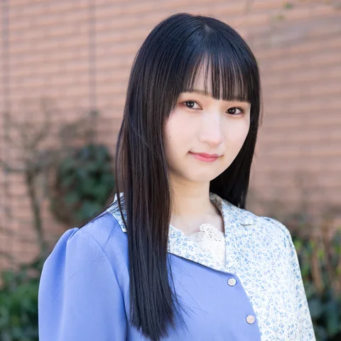
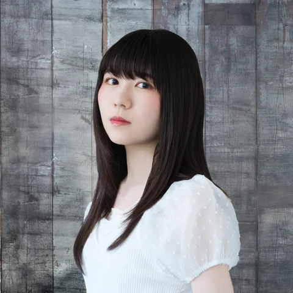
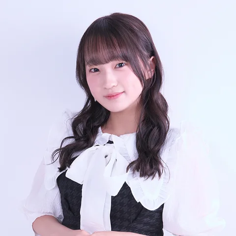
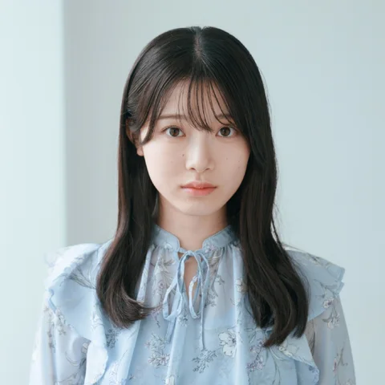
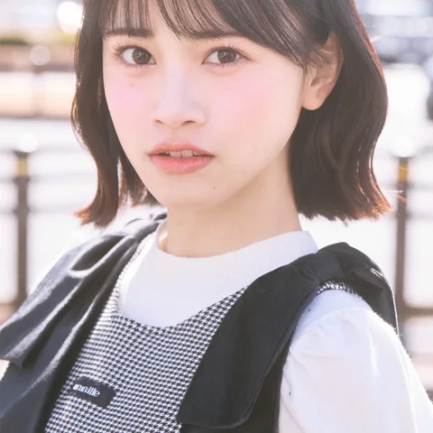
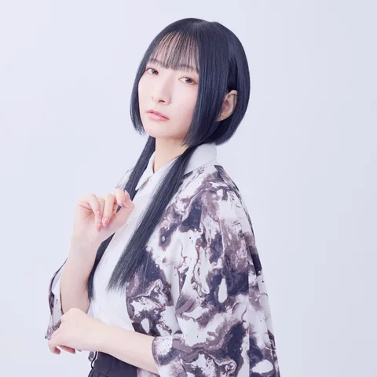
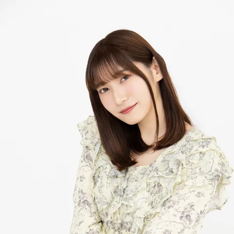

佐々木琴子
全9公演
コメ子 役
出演回を見る12/16（水）19:00 / 12/17（木）14:00 / 12/17（木）19:00 / 12/18（金）14:00 / 12/18（金）19:00 / 12/19（土）13:30 / 12/19（土）18:30 / 12/20（日）13:00 / 12/20（日）17:00
ライブパフォーマンス × リーディング
心の葛藤は、歌声になる。
2026.12.16（水）—12.20（日）
脚本：福緒唯 / 演出：髙木悠慎
公演日程・チケット11/12（木）22:00 発売開始｜先着順
※発売日時からチケット販売ページにアクセスできます。
「あなたたちは死にました」
転生を願う少女たちが、
神の箱庭でアイドルとして生き直す。
神にそう告げられたのは、11人の少女たち。
かわいく、きらめく箱庭のなかで、
彼女たちは“アイドル”として、もう一度、人生と向き合うことになる。
これは、少女たちの選択と、もう一度「生きる」ことの物語。
神が見守る箱庭でアイドルとして活動し、自身の転生に必要なエネルギーを信仰心というかたちで集めれば、己の望むままに再び生を受けることができるという。
少女たちは神の提案に応じ、これまでの名を捨て、神に与えられた名でアイドルとして新たな一歩を踏み出すことにした。
神に導かれた箱庭で出会ったのは、先にアイドルとして活動をはじめていた4人の先輩たち。そして、少女たちは懸命に生きる人々の生活に触れる。
少女たちは見知らぬ世界でアイドルとして生き直すなかで、何を思い、何を感じ、どのような選択を下すのか。そして、神はなぜ少女たちをアイドルにしたのか。
これは神と偶像が織りなすLIVE。心の葛藤は歌声になる。己の体すべてをつかって貴方に届ける。
物語とライブパフォーマンスが融合する、LIVE×Reading公演。
全9公演
コメ子 役
出演回を見る12/16（水）19:00 / 12/17（木）14:00 / 12/17（木）19:00 / 12/18（金）14:00 / 12/18（金）19:00 / 12/19（土）13:30 / 12/19（土）18:30 / 12/20（日）13:00 / 12/20（日）17:00
12/17・18
神 役
出演回を見る12/17（木）14:00 / 12/17（木）19:00 / 12/18（金）14:00 / 12/18（金）19:00
12/17・20
ムギ美 役
出演回を見る12/17（木）14:00 / 12/17（木）19:00 / 12/20（日）13:00 / 12/20（日）17:00

12/16・18・19
ムギ美 役 / 写真準備中
出演回を見る12/16（水）19:00 / 12/18（金）14:00 / 12/18（金）19:00 / 12/19（土）13:30 / 12/19（土）18:30

12/17・19
アワ和 役
出演回を見る12/17（木）14:00 / 12/17（木）19:00 / 12/19（土）13:30 / 12/19（土）18:30
12/16・18・20
アワ和 役
出演回を見る12/16（水）19:00 / 12/18（金）14:00 / 12/18（金）19:00 / 12/20（日）13:00 / 12/20（日）17:00
12/16・19
神 役
出演回を見る12/16（水）19:00 / 12/19（土）13:30 / 12/19（土）18:30
12/20
神 役
出演回を見る12/20（日）13:00 / 12/20（日）17:00

12/16・19
キビ崎 役
出演回を見る12/16（水）19:00 / 12/19（土）13:30 / 12/19（土）18:30
12/17・18・20
キビ崎 役
出演回を見る12/17（木）14:00 / 12/17（木）19:00 / 12/18（金）14:00 / 12/18（金）19:00 / 12/20（日）13:00 / 12/20（日）17:00

12/18・19
マメ乃 役
出演回を見る12/18（金）14:00 / 12/18（金）19:00 / 12/19（土）13:30 / 12/19（土）18:30
12/16・17・20
マメ乃 役
出演回を見る12/16（水）19:00 / 12/17（木）14:00 / 12/17（木）19:00 / 12/20（日）13:00 / 12/20（日）17:00

12/16・20
ざこざこ 役
出演回を見る12/16（水）19:00 / 12/20（日）13:00 / 12/20（日）17:00
12/18・19
ざこざこ 役
出演回を見る12/18（金）14:00 / 12/18（金）19:00 / 12/19（土）13:30 / 12/19（土）18:30
12/17
ざこざこ 役
出演回を見る12/17（木）14:00 / 12/17（木）19:00
おとな小学生
全9公演
AKI 役
出演回を見る12/16（水）19:00 / 12/17（木）14:00 / 12/17（木）19:00 / 12/18（金）14:00 / 12/18（金）19:00 / 12/19（土）13:30 / 12/19（土）18:30 / 12/20（日）13:00 / 12/20（日）17:00
全9公演
NIMO 役
出演回を見る12/16（水）19:00 / 12/17（木）14:00 / 12/17（木）19:00 / 12/18（金）14:00 / 12/18（金）19:00 / 12/19（土）13:30 / 12/19（土）18:30 / 12/20（日）13:00 / 12/20（日）17:00

12/16・18・19
KURARA 役
出演回を見る12/16（水）19:00 / 12/18（金）14:00 / 12/18（金）19:00 / 12/19（土）13:30 / 12/19（土）18:30
B≡FULLEST
12/17・20
KURARA 役
出演回を見る12/17（木）14:00 / 12/17（木）19:00 / 12/20（日）13:00 / 12/20（日）17:00
12/16・17・20
SERIMU 役
出演回を見る12/16（水）19:00 / 12/17（木）14:00 / 12/17（木）19:00 / 12/20（日）13:00 / 12/20（日）17:00

12/18・19
SERIMU 役
出演回を見る12/18（金）14:00 / 12/18（金）19:00 / 12/19（土）13:30 / 12/19（土）18:30
12/18・20
YOMONE 役
出演回を見る12/18（金）14:00 / 12/18（金）19:00 / 12/20（日）13:00 / 12/20（日）17:00
12/16・17・19
YOMONE 役
出演回を見る12/16（水）19:00 / 12/17（木）14:00 / 12/17（木）19:00 / 12/19（土）13:30 / 12/19（土）18:30
12/16・19・20
RANON 役
出演回を見る12/16（水）19:00 / 12/19（土）13:30 / 12/19（土）18:30 / 12/20（日）13:00 / 12/20（日）17:00

Hey!Mommy!
12/17・18
RANON 役
出演回を見る12/17（木）14:00 / 12/17（木）19:00 / 12/18（金）14:00 / 12/18（金）19:00
12/16・18・19
えるえる 役
出演回を見る12/16（水）19:00 / 12/18（金）14:00 / 12/18（金）19:00 / 12/19（土）13:30 / 12/19（土）18:30
おとな小学生
12/17・20
えるえる 役
出演回を見る12/17（木）14:00 / 12/17（木）19:00 / 12/20（日）13:00 / 12/20（日）17:00
メイホリック
全9公演
リブラ 役
出演回を見る12/16（水）19:00 / 12/17（木）14:00 / 12/17（木）19:00 / 12/18（金）14:00 / 12/18（金）19:00 / 12/19（土）13:30 / 12/19（土）18:30 / 12/20（日）13:00 / 12/20（日）17:00

12/17・18
ピスケス 役
出演回を見る12/17（木）14:00 / 12/17（木）19:00 / 12/18（金）14:00 / 12/18（金）19:00
12/16・19・20
ピスケス 役
出演回を見る12/16（水）19:00 / 12/19（土）13:30 / 12/19（土）18:30 / 12/20（日）13:00 / 12/20（日）17:00
12/18・19
カンケル 役
出演回を見る12/18（金）14:00 / 12/18（金）19:00 / 12/19（土）13:30 / 12/19（土）18:30
12/16・17・20
カンケル 役
出演回を見る12/16（水）19:00 / 12/17（木）14:00 / 12/17（木）19:00 / 12/20（日）13:00 / 12/20（日）17:00
12/16・17・19
ヴィルゴ 役
出演回を見る12/16（水）19:00 / 12/17（木）14:00 / 12/17（木）19:00 / 12/19（土）13:30 / 12/19（土）18:30
Mi'Line Hearts
12/18・20
ヴィルゴ 役
出演回を見る12/18（金）14:00 / 12/18（金）19:00 / 12/20（日）13:00 / 12/20（日）17:00

12/19・20
ぺぬぺぬ 役
出演回を見る12/19（土）13:30 / 12/19（土）18:30 / 12/20（日）13:00 / 12/20（日）17:00
12/16・17・18
ぺぬぺぬ 役
出演回を見る12/16（水）19:00 / 12/17（木）14:00 / 12/17（木）19:00 / 12/18（金）14:00 / 12/18（金）19:00
※ダブルキャスト制を含みます。出演者ごとに出演回が異なります。
ご購入前に、キャストの出演日をご確認ください。
応援キャストは、出演日以外の公演でも選択できます。
| 12.16（水） | |
|---|---|
| 12.17（木） | |
| 12.18（金） | |
| 12.19（土） | |
| 12.20（日） |
開演時間を選ぶと、その回の出演者を確認できます。
上演時間：約120分（予定）
※演出の都合により若干変動する可能性がございます。
当日券 ＋500円
非売品2L版ブロマイド1枚
（ブロマイドの種類はS席特典と同じ）
〒150-0043
東京都渋谷区道玄坂2-29-5
渋谷プライム 6階
「出演者から探す」でお名前を選ぶと出演公演を絞り込めます。各開演時間から、その回に出演する全キャストも確認できます。
約120分を予定しています。演出の都合により若干変動する可能性があります。
当日券料金は前売料金に500円を加算した金額です。販売有無・販売方法は公式からの案内をご確認ください。
スペースの都合上、お花・プレゼント・ファンレターは受付できません。入り待ち・出待ちや長時間の劇場周辺での滞留もご遠慮ください。